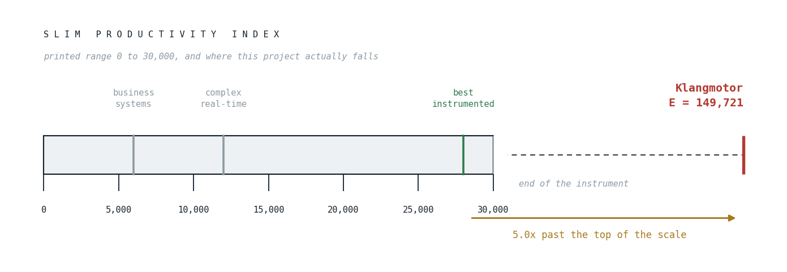

Off the End of the Instrument
Four cost models, 161,364 lines, and the 49% we threw away.
The question arrived in the middle of something else: how much is this worth, and would a company have built it?
The reflex is to reach for lines of code. We did, and the first number was wrong.
The first number was wrong three ways
The working figure in the room was "over 430,000 lines of Kotlin." Running cloc over the tree with the build directories excluded gives something else:
| What | Lines |
|---|---|
| Hand-written Kotlin, code only | 161,364 |
| Hand-written Kotlin, raw lines | 253,896 |
KSP-generated Kotlin, in build/ |
59,000 (126,408 raw) |
| Markdown docs | 67,115 |
Everything .kt raw, including generated |
380,304 |
The 430k is reachable, but only by counting things that should not count. 59,000 of those lines are KSP output: eight files, generated by the annotation processors on every build, costing zero human effort. Another 92,532 are blank lines and comments. Count the generated code and you are valuing the compiler; count the blanks and you are valuing the return key.
161,364 is the figure we use, and it splits 73,632 main / 84,473 test. There is more test code than production code in this engine.
That is the first thing the models cannot see, and it will not be the last.
Four models, run properly
The calibration point that matters: first commit 2025-12-20, this post 2026-09-10. Eight point seven months, essentially one person, 1,903 commits.
COCOMO 81
Boehm's original model [1], and still the one under the hood when someone says "this open-source project would have cost $X": Wheeler's More Than a Gigabuck [6] used exactly this to price Red Hat 7.1 at a billion dollars. Basic organic mode is PM = 2.4 x KSLOC^1.05:
- 499 person-months = 41.6 person-years, 26.5 months, 18.8 people.
Its honest failure mode: it is calibrated on 63 projects from the 1970s, and organic mode assumes a small team in a familiar domain. Semi-detached mode on the same input says 74.2 person-years, embedded says 133.8. The mode selection swings the answer by 3x before any data enters.
COCOMO II
The 2000 recalibration [2] replaced the fixed exponent with five scale factors and seventeen effort multipliers, which is its point: it can be told what kind of project this is. Set for the project as it was run, as well as we could rate it ourselves: team cohesion and site at their top ratings because it is one person, analyst and programmer capability and language experience rated very high (a self-rating, so read it as one), complexity high for real-time DSP plus a parser plus code generation, documentation high:
E = 0.91 + 0.01 x sum(SF) = 1.0168 prod(EM) = 0.374
PM = 2.94 x 161.364^1.0168 x 0.374 = 193
- 193 person-months = 16.1 person-years, 17.9 months, ~11 people.
Run the same size with every multiplier left at nominal (an ordinary team) and it says 43.1 person-years. The 27 person-year gap between those two rows is the model's estimate of what staffing choices are worth, and it is large.
Function points, by backfiring
Convert lines to function points at a published ratio, then price the function points [4]. Kotlin has no published ratio; Java sits near 53 logical statements per function point, and Kotlin is meaningfully terser, so 40 is a defensible guess:
- 4,034 function points, 202-336 person-months, schedule 27.7 months, about EUR 3.2M at EUR 800 per function point.
Its honest failure mode is the loudest of the four: backfiring ratios are not the same from vendor to vendor, and the technique has been argued to be "more wishful thinking than science" [5]. We include it because it lands in the same place as the others, not because the method deserves trust on its own.
Putnam SLIM
The one that earns this post its title. Putnam's software equation [3] relates size, effort and time through a productivity index E, and it does something the COCOMO family does not: effort scales with the fourth power of schedule compression.
At E = 12,000 (complex real-time) the model says:
| Schedule | Effort | Staff |
|---|---|---|
| 3.0 years | 4.8 PY | 1.6 |
| 2.5 years | 10.0 PY | 4.0 |
| 2.0 years | 24.3 PY | 12.2 |
| 1.5 years | 76.8 PY | 51.2 |
| 1.0 years | 389 PY | 389 |
That last row is not a prediction, it is a wall. Putnam's model has an impossible zone: below roughly 0.75 times the nominal schedule, no amount of headcount buys time. The 1.0-year row is the model's way of saying this cannot be done in a year at any staffing level.
Klangmotor reached this state in 0.725 years.
So we ran the equation backwards, solving for the productivity index the actual project implies: 161,364 lines, 0.725 years, 0.725 person-years:
E = 149,721
The SLIM productivity index tops out around 30,000 for the best-instrumented environments. The project does not score on the scale at all: the implied value sits about five times past its end. The needle is not in the red; it is off the instrument, lying on the bench.

Fig. 1: the Putnam productivity index, printed to its real range, with the measured value where it falls.
What the models cannot see
Every model above prices the surviving artifact. None of them can see work that was deleted, and this project deletes a great deal on purpose.
Measuring that turned out to have a trap in it. The first pass used git log --numstat --no-renames and reported 1,124,208 lines of gross churn, including an entire 155,371-line module called strudel that appeared to have been written and thrown away in full. It had not been. It had been renamed to sprudel, and --no-renames faithfully reported a rename as a complete deletion plus a complete re-addition. The real numbers, with rename and copy detection on:
git log --numstat -M -C --format='%H' -- '*.kt'
+492,569 -241,098 net 251,471
Two lines were written for every line that survives. 49% of all Kotlin ever committed to this repository has since been deleted.
That is not sloppiness, it is policy. The project's own rules require it: a replaced surface is removed, not deprecated, and one word per concept end to end. The register in CLAUDE.md carries a "Retired, do not restore or cite" section that is, read a certain way, a catalogue of deliberate discard: whole modules, families of doors, a DSL or two, most with the date it went. A company shipping the same features would more likely have deprecated than removed, and ended up with a larger codebase.
Charging for it, without double-charging
COCOMO II has the right lever already: REVL, requirements evolution and volatility, which inflates size by the percentage of code discarded. The temptation is to plug in the full 96% implied by the deletion count. That would be wrong: COCOMO's calibration data comes from real projects that also churned, so the baseline already contains ordinary rework. Only the deliberate architectural retirement is genuinely extra, which puts REVL near 30%:
| REVL | Effective KSLOC | COCOMO 81 | COCOMO II tuned |
|---|---|---|---|
| 0% (naive) | 161.4 | 41.6 PY | 16.1 PY |
| 30% (deliberate retirement) | 209.8 | 54.8 PY | 21.0 PY |
| 96% (every deletion) | 316.3 | 84.4 PY | 31.9 PY |
Churn moves the central estimate from 16.1 to 21.0 person-years, about +30%. Priced out:
| Rate | Replacement cost |
|---|---|
| German senior, fully loaded EUR 130k | EUR 2.7M |
| EU agency, EUR 1,000/day | EUR 4.6M |
| US senior, fully loaded USD 300k | USD 6.3M |
Three independent models converging on EUR 2.5-4M is the strongest single result here. Convergence is worth more than any one model's precision.
The gap is the answer
Set the realized throughput against the model's own baseline. COCOMO 81 organic implies roughly 15 lines per person-day. Over 183 working days this project delivered 1,374 net lines per day, having written 2,692.
That is 89 times the baseline.
A number that large is not a productivity claim, it is a category error being made visible. The models describe something else: teams, with coordination overhead, stakeholder requirements churn, handoffs, and the communication cost that Brooks priced decades ago. Removing all of that, and adding a machine that types, does not make you 89x better than a developer. It makes the comparison meaningless in the direction nobody calibrated for.
So: would a company have built it?
Our guess is no, and not for lack of ability. At the first roadmap review three line items would probably go: write our own scripting language becomes "use Lua", write our own DSP engine becomes "wrap Web Audio", write our own UI framework becomes "use React". Then the test suite would get cut below 1:1, the 67,115 lines of design docs would not get written, and the scope would shrink to a third. What ships in nine months with four people is a smaller and different thing, and a reasonable one; it is just not this one.
And per Putnam, this state was not reachable in 8.7 months at any headcount: the interval is inside the model's impossible zone.
What it is actually worth
Replacement cost and market value are different numbers, and only one of them is large.
Replacement cost: EUR 2.5-4M. That is what it would cost to rebuild this state conventionally, and it is well supported.
Market value today: far less. Pre-alpha, no users, no revenue, a niche market, AGPL. A discounted cash flow is zero because there is no cash flow. Value follows users, and there are none yet.
There is also a deflationary catch worth naming plainly, because it is the most uncomfortable thing this exercise turned up. An asset's value is capped by what a competitor pays to reproduce it, and this project just demonstrated that the reproduction cost is 8.7 solo months. The code is not the moat.
What is scarce is the 67,115 lines of design record and the judgment that produced the 49% deletion rate. Knowing which half to throw away is the expensive part, and it does not appear in any of the four models, because it has a line count of approximately zero. The project guideline that says won't-implement is a first-class outcome describes work that produces negative lines.
Four models, and the thing they all miss is the same thing: taste has no SLOC.
References
[1] Boehm, B. W. (1981). Software Engineering Economics. Prentice-Hall, Englewood Cliffs, NJ. archive.org
[2] Boehm, B. W., Abts, C., Brown, A. W., Chulani, S., Clark, B. K., Horowitz, E., Madachy, R., Reifer, D. J., & Steece, B. (2000). Software Cost Estimation with COCOMO II. Prentice Hall. Constants quoted from the COCOMO II Model Definition Manual.
[3] Putnam, L. H. (1978). A General Empirical Solution to the Macro Software Sizing and Estimating Problem. IEEE Transactions on Software Engineering, SE-4(4), 345-361. doi:10.1109/TSE.1978.231521
[4] Jones, C. (1995). Backfiring: Converting Lines-of-Code to Function Points. Computer, 28(11), 87-88. doi:10.1109/2.471193
[5] Dekkers, C., & Gunter, I. A. (2000). Using "Backfiring" to Accurately Size Software: More Wishful Thinking than Science. researchgate.net
[6] Wheeler, D. A. (2001, updated 2002). More Than a Gigabuck: Estimating GNU/Linux's Size. dwheeler.com